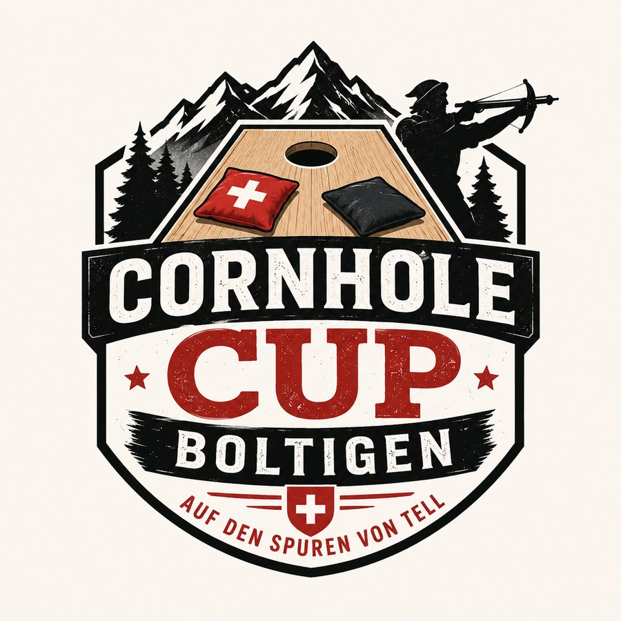

Das Plauschturnier an der Bundesfeier
CornholeCupBoltigen
Auf den Spuren von Tell
Am 1. August 2026 fliegen in Boltigen die Cornhole-Säckli. Meldet euer 2er-Team an und erlebt einen gemütlichen Wettkampf mit Plausch, Spass und Cornhole.
Wann, wo, wie?
Alle Infos auf einen Blick
Kurz erklärt
Was ist Cornhole?
Cornhole ist ein einfaches, aber spannendes Wurfspiel. Ziel ist es, kleine Säckli auf ein schräges Brett zu werfen. Landet ein Säckli auf dem Brett, gibt es Punkte. Trifft es ins Loch, gibt es noch mehr Punkte.
Das Spiel ist leicht zu lernen und macht sofort Spass – egal ob Anfängerin, Anfänger oder geübte Werfer.
Anmeldung
Jetzt Team anmelden
Ihr wollt beim Cornhole Cup Boltigen dabei sein? Dann meldet euer 2er-Team direkt über das Anmeldeformular an.
Bitte gebt bei der Anmeldung euren Teamnamen, die Namen der beiden Spielerinnen oder Spieler sowie eine Kontaktperson an.

QR-Code zur Anmeldung
Scannen und direkt anmelden.
Offizielle Spielregeln
So wird Cornhole gespielt
Für den Cornhole Cup Boltigen orientieren wir uns am offiziellen Regeldokument. Der Turniermodus kann je nach Anzahl angemeldeter Teams angepasst und vor Ort durch die Turnierleitung bekanntgegeben werden.
Das vollständige PDF ist hier hinterlegt und kann vor dem Turnier heruntergeladen oder ausgedruckt werden.
Teams
Cornhole wird grundsätzlich von zwei Zweierteams gegeneinander gespielt.
Spielfeld
Die beiden Cornhole-Bretter werden auf einer ebenen Fläche mit 8 Metern Abstand gegenüber platziert.
Wurfzonen
Links und rechts neben jedem Brett befindet sich je eine Wurfzone. Die Position wird zu Beginn ausgelost.
Ablauf
In einer Runde werfen die Spielerinnen und Spieler an einem Brett ihre Säckchen abwechslungsweise auf das gegenüberliegende Brett.
Punkte
Auf dem Brett gibt es 1 Punkt, im Loch 3 Punkte. Säckchen mit Bodenkontakt zählen nicht.
Differenzwertung
Am Ende einer Runde zählt die Punktedifferenz. Nur diese Differenz wird dem führenden Team gutgeschrieben.
Übertritt
Wer beim Wurf die Vorderkante des eigenen Bretts übertritt, verliert diesen Wurf. Das Säckchen wird entfernt.
Satzsieg
Ein Satz geht grundsätzlich an das Team, das zuerst 21 Punkte erreicht.
Fairplay
Bei Unklarheiten entscheidet die Turnierleitung. Plausch, Spass und ein fairer Wettkampf stehen im Vordergrund.
Spiel- & Teilnahmebedingungen
Spiel- und Teilnahmebedingungen
Cornhole Cup Boltigen · 01. August 2026
Mit der Anmeldung zum Cornhole Cup Boltigen bestätigen die Teilnehmenden, dass sie die folgenden Spielbedingungen und Teilnahmebedingungen gelesen haben und akzeptieren.
1. Teilnahme
Der Cornhole Cup Boltigen findet am 01. August 2026 in der MZH Boltigen statt. Organisiert wird der Anlass durch die Musikgesellschaft Boltigen.
Ein Team besteht aus 2 Personen.
Teilnehmen können Teams in folgenden Kategorien:
- Kinderkategorie: Für Kinder-Teams oder jüngere Teilnehmende.
- Erwachsenenkategorie: Für Erwachsene sowie gemischte Teams mit Erwachsenen.
Jede Person darf grundsätzlich nur in einem Team teilnehmen, ausser das Organisationskomitee erlaubt im Einzelfall etwas anderes.
2. Startgeld
Das Startgeld beträgt Fr. 10.00 pro Team.
Das Startgeld ist spätestens vor Turnierbeginn vor Ort zu bezahlen, sofern vom Organisationskomitee nichts anderes kommuniziert wird.
Bei Nichterscheinen oder kurzfristiger Abmeldung besteht grundsätzlich kein Anspruch auf Rückerstattung des Startgeldes.
3. Anmeldung
Die Anmeldung erfolgt über das offizielle Anmeldeformular.
Die Anzahl Teams kann aus organisatorischen Gründen begrenzt sein. Die Anmeldungen werden in der Regel nach Eingang berücksichtigt.
Nach der Anmeldung darf die Musikgesellschaft Boltigen die angegebene Kontaktperson bezüglich Turnierinformationen kontaktieren.
4. Spielmodus
Der genaue Spielmodus wird abhängig von der Anzahl angemeldeter Teams festgelegt.
Möglich sind zum Beispiel Gruppenspiele, K.-o.-Runden oder ein gemischtes Turniersystem.
Das Organisationskomitee informiert die Teams spätestens am Turniertag über den definitiven Ablauf.
Die Spielleitung ist für die Organisation und Durchführung des Turniers zuständig. Ihre Entscheide sind verbindlich.
5. Spielregeln
Gespielt wird nach vereinfachten Cornhole-Regeln.
Ziel des Spiels ist es, die Cornhole-Säckchen auf das Brett oder in das Loch zu werfen.
Grundsätzlich gilt folgende Punktewertung:
- Säckchen im Loch: 3 Punkte
- Säckchen auf dem Brett: 1 Punkt
- Säckchen neben dem Brett oder zuerst am Boden: 0 Punkte
Die genaue Punktewertung und allfällige Anpassungen werden vor Turnierbeginn erklärt.
Fairplay steht im Vordergrund. Unsportliches Verhalten kann zur Verwarnung oder zum Ausschluss vom Turnier führen.
6. Pünktlichkeit
Die Teams müssen rechtzeitig vor Ort sein und sich bei der Turnierleitung melden.
Teams, die zu spät erscheinen, können ihr Spiel verlieren oder vom Turnier ausgeschlossen werden, falls dadurch der Turnierablauf gestört wird.
7. Versicherung und Haftung
Die Teilnahme erfolgt auf eigene Verantwortung.
Die Musikgesellschaft Boltigen übernimmt keine Haftung für Unfälle, Verletzungen, Diebstahl oder Schäden an persönlichen Gegenständen.
Versicherung ist Sache der Teilnehmenden.
8. Foto- und Videoaufnahmen
Während des Anlasses können Fotos und Videos gemacht werden.
Diese können für die Kommunikation der Musikgesellschaft Boltigen verwendet werden, zum Beispiel auf der Webseite, in sozialen Medien, in Vereinsberichten oder für zukünftige Werbung zum Anlass.
Wer nicht fotografiert oder gefilmt werden möchte, meldet sich bitte vor Ort beim Organisationskomitee.
9. Datenschutz
Die im Anmeldeformular angegebenen Daten werden ausschliesslich für die Organisation und Durchführung des Cornhole Cup Boltigen verwendet.
Dazu gehören insbesondere Teamangaben, Namen der Teilnehmenden sowie die Kontaktdaten der angegebenen Kontaktperson.
Die Daten werden nicht an Dritte weitergegeben und nicht für andere Zwecke verwendet.
Nach Abschluss des Anlasses und sobald die Daten für die Organisation nicht mehr benötigt werden, werden die Anmeldedaten gelöscht beziehungsweise nicht weiter aufbewahrt.
10. Änderungen durch das Organisationskomitee
Das Organisationskomitee behält sich vor, den Spielmodus, den Zeitplan oder einzelne Regeln anzupassen, wenn dies aus organisatorischen Gründen nötig ist.
Bei schlechtem Wetter, technischen Problemen oder anderen unvorhersehbaren Umständen können Anpassungen vorgenommen werden.
Rahmenprogramm
Mehr als nur ein Turnier
Auch neben dem Spielfeld ist für eine gemütliche Atmosphäre gesorgt. Zuschauerinnen und Zuschauer sind herzlich willkommen, die Teams anzufeuern und den 1. August gemeinsam in Boltigen zu geniessen.
- Festwirtschaft vor Ort
- Gemütlicher 1.-August-Anlass
- Zuschauerinnen und Zuschauer willkommen
- Plausch, Spass und Cornhole

Das Plauschturnier an der Bundesfeier!
Veranstalter
Musikgesellschaft Boltigen
Der Cornhole Cup Boltigen wird von der Musikgesellschaft Boltigen organisiert. Wir freuen uns auf viele Teams, faire Spiele, gute Stimmung und einen unvergesslichen 1.-August-Anlass in Boltigen.
Bei Fragen zum Anlass darfst du dich gerne bei uns melden.
Ansprechperson:
Joel Matti
+41 79 904 72 35
info@cornholecup.ch
Datenschutz
Umgang mit Anmeldedaten
Die bei der Anmeldung angegebenen Daten werden ausschliesslich für die Organisation und Durchführung des Cornhole Cup Boltigen verwendet. Weitere Informationen findest du in der vollständigen Datenschutzerklärung.
Datenschutzerklärung öffnen